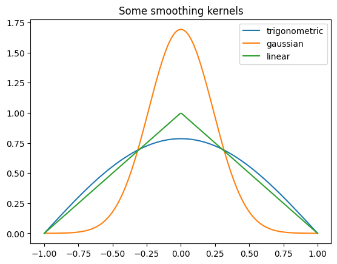
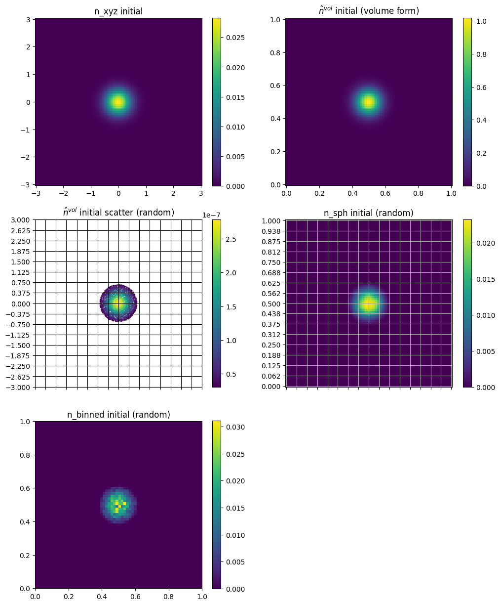
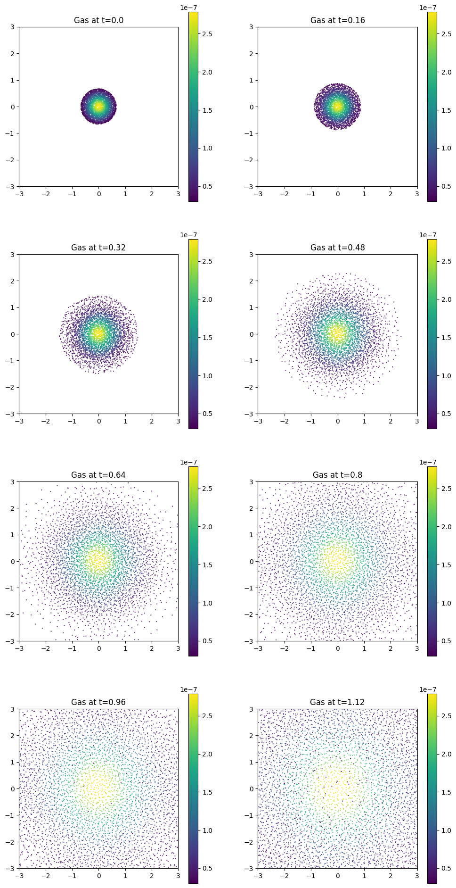

Gas Expansion with ViscousEulerSPH#
This tutorial solves Euler-type fluid dynamics with SPH using the ViscousEulerSPH model. The continuum equations are
Here, \(S\) is entropy per unit mass and the internal energy model is
After SPH discretization, particle trajectories satisfy
with smoothed density
In Struphy, the pressure-driven velocity update is handled by PushVinSPHpressure.
Before launching the full gas-expansion case, let us quickly inspect a few available smoothing kernels.
[1]:
import numpy as np
import matplotlib.pyplot as plt
from struphy.pic.sph_smoothing_kernels import gaussian_uni, linear_uni, trigonometric_uni
x = np.linspace(-1, 1, 200)
out1 = np.zeros_like(x)
out2 = np.zeros_like(x)
out3 = np.zeros_like(x)
for i, xi in enumerate(x):
out1[i] = trigonometric_uni(xi, 1.0)
out2[i] = gaussian_uni(xi, 1.0)
out3[i] = linear_uni(xi, 1.0)
plt.plot(x, out1, label="trigonometric")
plt.plot(x, out2, label="gaussian")
plt.plot(x, out3, label="linear")
plt.title("Some smoothing kernels")
plt.legend()
[1]:
<matplotlib.legend.Legend at 0x7f03e09ce140>

Step 1: Import APIs and the ViscousEulerSPH Model#
Load all Struphy components and plotting utilities needed for this standalone gas-expansion tutorial.
[2]:
from struphy import DerhamOptions, EnvironmentOptions, Time
from struphy import domains
from struphy import equils
from struphy import grids
from struphy import (
BinningPlot,
BoundaryParameters,
KernelDensityPlot,
LoadingParameters,
SavingParameters,
SortingParameters,
WeightsParameters,
)
from struphy import Simulation
# import model
from struphy.models import ViscousEulerSPH
Let us verfiy the model equations by calling the pde method:
[3]:
ViscousEulerSPH.pde()
PDEs solved by model:
Continuity:
∂ₜ ρ + ∇ · (ρ 𝐮) = 0
Momentum:
ρ (∂ₜ 𝐮 + 𝐮 · ∇ 𝐮) = -∇ ( ρ² ∂𝒰(ρ, S)∂ρ ) - ∇ · π
Entropy:
∂ₜ S + 𝐮 · ∇ S = 0
where S denotes the entropy per unit mass and π is the viscous stress tensor.
The viscous stress tensor for a Newtonian fluid is given by:
σ = -μ ( ∇ 𝐮 + (∇ 𝐮)ᵀ - 23 (∇ · 𝐮) 𝐈 )
where μ is the dynamic (shear) viscosity and 𝐈 is the identity tensor.
The internal energy per unit mass can be defined in two ways:
isothermal: 𝒰(ρ, S) = κ(S) \log ρ
polytropic: 𝒰(ρ, S) = κ(S) ργ - 1γ - 1
Step 2: Define Environment and Domain#
Set time step, final time, and simulation domain. These settings are tuned for a 2D expansion embedded in a cuboid geometry.
[4]:
# environment options
env = EnvironmentOptions()
# time stepping
time_opts = Time(dt=0.04, Tend=1.6, split_algo="Strang")
# geometry
l1 = -3.0
r1 = 3.0
l2 = -3.0
r2 = 3.0
l3 = 0.0
r3 = 1.0
domain = domains.Cuboid(l1=l1, r1=r1, l2=l2, r2=r2, l3=l3, r3=r3)
Step 3: Build the Initial Density Blob#
Define a Gaussian density profile in the \((x,y)\) plane and wrap it as a fluid equilibrium object. This serves as the initial condition for the expansion.
[5]:
# gaussian initial blob
import numpy as np
T_h = 0.2
gamma = 5 / 3
n_fun = lambda x, y, z: np.exp(-(x**2 + y**2) / T_h) / 35
blob = equils.GenericCartesianFluidEquilibrium(n_xyz=n_fun)
Step 4: Set Grid and de Rham Discretization#
Choose the spline grid and de Rham options used by the field projections in this SPH run.
[6]:
# fluid equilibrium (can be used as part of initial conditions)
equil = None
# grid
grid = grids.TensorProductGrid(num_elements=(64, 64, 1))
# derham options
bcs = (("free", "free"), ("free", "free"), None)
derham_opts = DerhamOptions(degree=(3, 3, 1), bcs=bcs)
Step 5: Instantiate ViscousEulerSPH and Simulation#
Create a lightweight model with magnetic-background and viscosity terms disabled (with_B0=False, with_viscosity=False), then build the simulation object.
[7]:
# light-weight model instance
model = ViscousEulerSPH(with_B0=False, with_viscosity=False)
sim = Simulation(model,
env=env,
time_opts=time_opts,
domain=domain,
equil=equil,
grid=grid,
derham_opts=derham_opts,)
Step 6: Configure Marker Sampling#
Set dense particle-per-box loading and enable reject_weights to discard very small particle weights. This reduces cost while preserving the dominant density structure.
[8]:
loading_params = LoadingParameters(ppb=400)
weights_params = WeightsParameters(reject_weights=True, threshold=3e-8)
boundary_params = BoundaryParameters()
nx = 16
ny = 16
sorting_params = SortingParameters(boxes_per_dim=(nx, ny, 1))
Step 7: Add Diagnostics for Visualization#
Save both a binning plot and an SPH kernel-density plot so you can compare coarse gridded density against kernel-based reconstruction.
[9]:
bin_plot = BinningPlot(
slice="e1_e2",
n_bins=(64, 64),
ranges=((0.0, 1.0), (0.0, 1.0)),
divide_by_jac=False,
)
pts_e1 = 100
pts_e2 = 90
kd_plot = KernelDensityPlot(pts_e1=pts_e1, pts_e2=pts_e2, pts_e3=1)
saving_params = SavingParameters(
n_markers=1.0,
binning_plots=(bin_plot,),
kernel_density_plots=(kd_plot,),
)
model.euler_fluid.set_markers(
loading_params=loading_params,
weights_params=weights_params,
boundary_params=boundary_params,
sorting_params=sorting_params,
saving_params=saving_params,
)
Step 8: Select the SPH Kernel for Pressure Updates#
For the pressure propagator, choose gaussian_2d as smoothing kernel. You can swap this setting later to study kernel sensitivity.
[10]:
# propagator options
from struphy import ButcherTableau
butcher = ButcherTableau(algo="forward_euler")
model.propagators.push_eta.options = model.propagators.push_eta.Options(butcher=butcher)
model.propagators.push_sph_p.options = model.propagators.push_sph_p.Options(kernel_type="gaussian_2d")
Step 9: Initialize, Run, and Load Results#
Attach the Gaussian background and execute the standard workflow: run(), pproc(), load_plotting_data().
Performance note: early time steps are typically slower because particles are highly concentrated; runtime usually improves as the cloud expands. Running from a console script (especially with MPI/GPU support) is faster than notebook execution.
[11]:
# background, perturbations and initial conditions
model.euler_fluid.var.add_background(blob)
[12]:
sim.run()
Starting run for model ViscousEulerSPH ...
Time stepping: 100%|██████████| 40/40 [00:24<00:00, 1.66step/s]
Struphy run finished.
[13]:
sim.pproc()
Post-processing path /home/runner/work/struphy/struphy/doc/_collections/tutorials/sim_1
No feec fields found in hdf5 file, skipping post-processing of fields.
Evaluation of 3924 marker orbits for euler_fluid
100%|██████████| 41/41 [00:00<00:00, 60.79it/s]
Evaluation of distribution functions for euler_fluid
100%|██████████| 1/1 [00:00<00:00, 707.42it/s]
100%|██████████| 1/1 [00:00<00:00, 169.58it/s]
Evaluation of sph density for euler_fluid
[14]:
sim.load_plotting_data()
Loading post-processed plotting data:
Data path: /home/runner/work/struphy/struphy/doc/_collections/tutorials/sim_1/post_processing
The following data has been loaded:
grids:
self.t_grid.shape =(41,)
self.spline_values:
self.orbits:
euler_fluid, shape = (41, 3924, 8)
Number of time points: 41
Number of particles: 3924
Number of attributes: 8
self.f:
euler_fluid
e1_e2_density
self.n_sph:
euler_fluid
view_0
Step 10: Inspect Stored Outputs#
After post-processing, use the printed paths to locate simulation artifacts. The following cells compare analytical initialization, marker sampling, SPH reconstruction, and binned density diagnostics.
[15]:
# analytical functions
n_xyz = blob.n_xyz
n3 = blob.n3
# grids
x = np.linspace(l1, r1, pts_e1)
y = np.linspace(l2, r2, pts_e2)
xx, yy = np.meshgrid(x, y, indexing="ij")
ee1, ee2, ee3 = sim.n_sph.euler_fluid.view_0.grid_n_sph
eta1 = ee1[:, 0, 0]
eta2 = ee2[0, :, 0]
bc_x = sim.f.euler_fluid.e1_e2_density.grid_e1
bc_y = sim.f.euler_fluid.e1_e2_density.grid_e2
# markers
orbits = sim.orbits.euler_fluid
positions = orbits[0, :, :3]
weights = orbits[0, :, 6]
# binning and sph eval
n_sph = sim.n_sph.euler_fluid.view_0.n_sph[0]
f_bin = sim.f.euler_fluid.e1_e2_density.f_binned[0]
[16]:
import matplotlib.pyplot as plt
plt.figure(figsize=(12, 15))
# plots
plt.subplot(3, 2, 1)
plt.pcolor(xx, yy, n_fun(xx, yy, 0))
plt.axis("square")
plt.title("n_xyz initial")
plt.colorbar()
plt.subplot(3, 2, 2)
plt.pcolor(eta1, eta2, n3(eta1, eta2, 0, squeeze_out=True).T)
plt.axis("square")
plt.title("$\hat{n}^{\t{vol}}$ initial (volume form)")
plt.colorbar()
make_scatter = True
if make_scatter:
plt.subplot(3, 2, 3)
ax = plt.gca()
ax.set_xticks(np.linspace(l1, r1, nx + 1))
ax.set_yticks(np.linspace(l2, r2, ny + 1))
plt.tick_params(labelbottom=False)
coloring = weights
plt.scatter(positions[:, 0], positions[:, 1], c=coloring, s=0.25)
plt.grid(c="k")
plt.axis("square")
plt.title("$\hat{n}^{\t{vol}}$ initial scatter (random)")
plt.xlim(l1, r1)
plt.ylim(l2, r2)
plt.colorbar()
plt.subplot(3, 2, 4)
ax = plt.gca()
ax.set_xticks(np.linspace(0, 1, nx + 1))
ax.set_yticks(np.linspace(0, 1.0, ny + 1))
plt.tick_params(labelbottom=False)
plt.pcolor(ee1[:, :, 0], ee2[:, :, 0], n_sph[:, :, 0])
plt.grid()
plt.axis("square")
plt.title("n_sph initial (random)")
plt.colorbar()
plt.subplot(3, 2, 5)
ax = plt.gca()
plt.pcolor(bc_x, bc_y, f_bin)
plt.axis("square")
plt.title("n_binned initial (random)")
plt.colorbar()
[16]:
<matplotlib.colorbar.Colorbar at 0x7f03630b29e0>

[17]:
dt = time_opts.dt
Nt = sim.t_grid.size - 1
positions = orbits[:, :, :3]
interval = Nt / 10
plot_ct = 0
plt.figure(figsize=(12, 24))
for i in range(Nt):
if i % interval == 0:
print(f"{i=}")
plot_ct += 1
plt.subplot(4, 2, plot_ct)
ax = plt.gca()
coloring = weights
plt.scatter(positions[i, :, 0], positions[i, :, 1], c=coloring, s=0.25)
plt.axis("square")
plt.title("n0_scatter")
plt.xlim(l1, r1)
plt.ylim(l2, r2)
plt.colorbar()
plt.title(f"Gas at t={i * dt}")
if plot_ct == 8:
break
i=0
i=4
i=8
i=12
i=16
i=20
i=24
i=28
